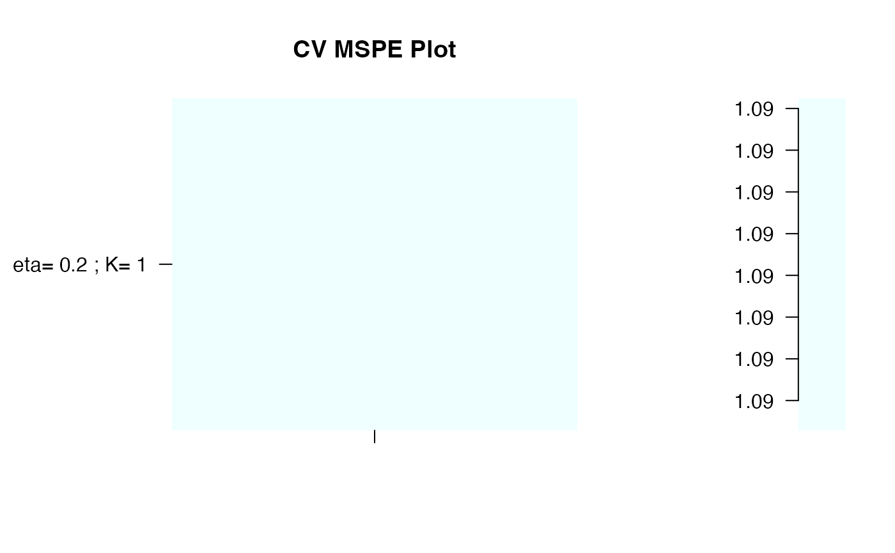
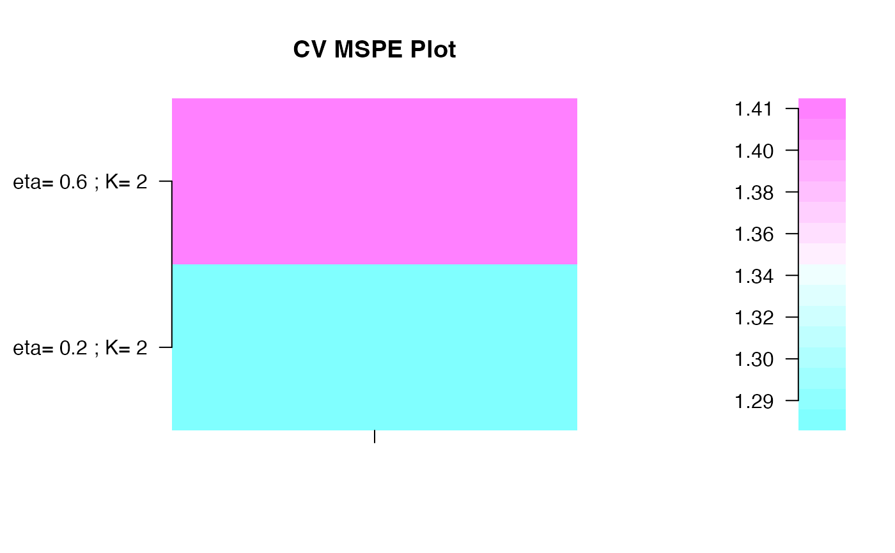

Title
Usage
nbcomp.bootspls(
x,
y,
fold = 10,
eta,
R = 500,
maxnt = 10,
kappa = 0.5,
select = "pls2",
fit = "simpls",
scale.x = TRUE,
scale.y = FALSE,
plot.it = TRUE,
typeBCa = TRUE,
verbose = TRUE
)Arguments
- x
Matrix of predictors.
- y
Vector or matrix of responses.
- fold
Number of fold for cross-validation
- eta
Thresholding parameter. eta should be between 0 and 1.
- R
Number of resamplings.
- maxnt
Maximum number of components allowed in a spls model.
- kappa
Parameter to control the effect of the concavity of the objective function and the closeness of original and surrogate direction vectors. kappa is relevant only when responses are multivariate. kappa should be between 0 and 0.5. Default is 0.5.
- select
PLS algorithm for variable selection. Alternatives are "pls2" or "simpls". Default is "pls2".
- fit
PLS algorithm for model fitting. Alternatives are "kernelpls", "widekernelpls", "simpls", or "oscorespls". Default is "simpls".
- scale.x
Scale predictors by dividing each predictor variable by its sample standard deviation?
- scale.y
Scale responses by dividing each response variable by its sample standard deviation?
- plot.it
Plot the results.
- typeBCa
Include computation for BCa type interval.
- verbose
Displays information on the algorithm.
References
A new bootstrap-based stopping criterion in PLS component construction,
J. Magnanensi, M. Maumy-Bertrand, N. Meyer and F. Bertrand (2016), in The Multiple Facets of Partial Least Squares and Related Methods,
doi:10.1007/978-3-319-40643-5_18
A new universal resample-stable bootstrap-based stopping criterion for PLS component construction,
J. Magnanensi, F. Bertrand, M. Maumy-Bertrand and N. Meyer, (2017), Statistics and Computing, 27, 757–774.
doi:10.1007/s11222-016-9651-4
New developments in Sparse PLS regression, J. Magnanensi, M. Maumy-Bertrand,
N. Meyer and F. Bertrand, (2021), Frontiers in Applied Mathematics and Statistics,
doi:10.3389/fams.2021.693126
.
Author
Jérémy Magnanensi, Frédéric Bertrand
frederic.bertrand@lecnam.net
https://fbertran.github.io/homepage/
Examples
set.seed(314)
data(pine, package = "plsRglm")
Xpine<-pine[,1:10]
ypine<-log(pine[,11])
nbcomp.bootspls(x=Xpine,y=ypine,eta=.2, maxnt=1)
#> eta = 0.2
#> [1] 1
#> [1] 2
#>
#> Optimal parameters: eta = 0.2, K = 1

#> $mspemat
#>
#> eta= 0.2 , K= 1 1.090242
#>
#> $eta.opt
#> [1] 0.2
#>
#> $K.opt
#> [1] 1
#>
# \donttest{
set.seed(314)
data(pine, package = "plsRglm")
Xpine<-pine[,1:10]
ypine<-log(pine[,11])
nbcomp.bootspls.para(x=Xpine,y=ypine,eta=c(.2,.6))
#> [1] "eta = 0.2"
#> [1] 2
#> [1] 3
#> [1] "eta = 0.6"
#> [1] 2
#> [1] 3
#>
#> Optimal parameters: eta = 0.2, K = 2

#> $mspemat
#>
#> eta= 0.2 ; K= 2 1.276262
#> eta= 0.6 ; K= 2 1.413876
#>
#> $eta.opt
#> [1] 0.2
#>
#> $K.opt
#> result.1
#> 2
#>
# }